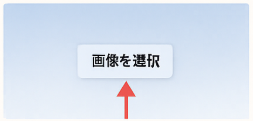
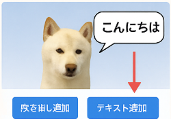
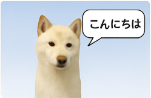
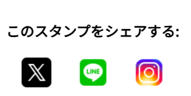

① 写真をアップロード
「画像を選択」ボタンから、背景に使いたい画像をアップロードしてください。

② 吹き出しやテキストを追加
吹き出しの色を選んで「吹き出し追加」、またはテキストを入力して「テキスト追加」を押すことで、画像の上に要素を配置できます。

③ 要素を自由に動かす
吹き出しや文字はドラッグで移動できます。右下の青い四角をドラッグすればサイズ変更も可能です。

④ 画像を保存してシェア
「画像を保存」ボタンを押すと画像が保存され、保存完了後に表示される画面からSNSシェアも可能です。
